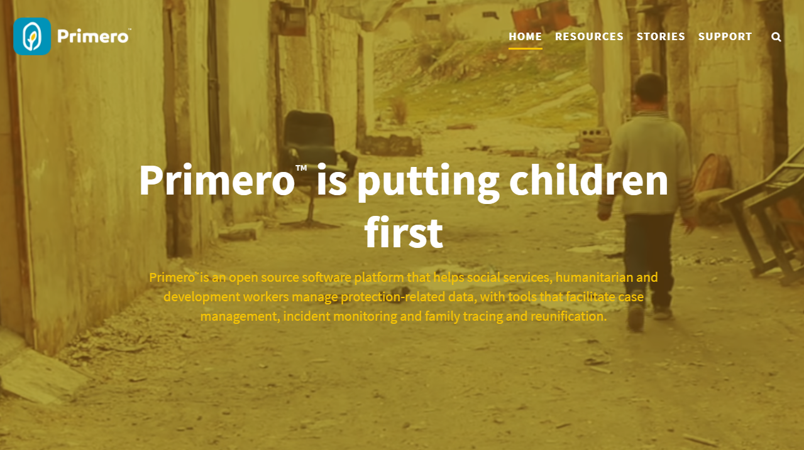

As of May 2018, 68.5 million people around the world have been forcibly displaced from their homes due to armed conflict and natural disaster. 🌪🔥💔 Of these, 25.4 million are refugees, and more than 50 percent are children 🙅♀️🙅🙇♀️🙇♂️ For helping missing people International Rescue Committee , Save the Children UK and UNICEF developed child protection information management system (CPIMS). One of the products is an open source software platform Primero, originally designed to facilitate family tracing and reunification (FTR) of children in emergencies. In Primero social workers can report missing child 👶 in the system, as well as parent/cousin 👩🦰 searching for child. The system then helps to track down and reunite the families. 👨👩👦👨👩👧👨👩👧👦 To know more about Primero visit primero.org And to find out more praiseworthy software platforms for positive impact on society please follow our page: https://www.facebook.com/ITforSociety 👈👈👈👍

The Shiba Inu is the smallest of the six original and distinct spitz breeds of dog from Japan. A small, agile dog that copes very well with mountainous terrain, the Shiba Inu was originally bred for hunting.
The Shiba Inu is the smallest of the six original and distinct spitz breeds of dog from Japan. A small, agile dog that copes very well with mountainous terrain, the Shiba Inu was originally bred for hunting.